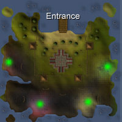
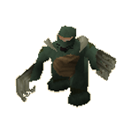
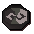

")
Pest Control
Introduction | Location | Requirements | Recommended Items
Holding back the Hordes | Rewards | Development Team
Holding back the Hordes | Rewards | Development Team
Pest Control is only accessible to RuneScape Members. Please subscribe to get this feature.
Please note this is a 'Safe' activity. If you die during this activity, you will keep your items.
Introduction

Outposts were constructed near the regular breaches to house the Void Knights whose magic was used to close the portals. Unfortunately, the invaders have become more aggressive and have managed to overrun some outposts before the ritual could be completed. Can someone help the Void Knights' effort and fight back against the creatures?
Location

Find the boat highlighted to the left, just south of the Lady Lumbridge, and speak with the Squire. She will explain that there is a situation developing and will ask if you want to go to the Void Knights' Outpost.
If you say yes, you will sail the long journey to the outpost south of Ape Atoll.
Once there, you will find yourself standing on the north dock of the outpost mapped below.

There are a few shops to explore here as well as a bank.
The archery store sells Ranged weapons such as javelins, as well as providing arrowheads up to rune.
The character in the smithy will fix broken tools and Barrows armour, similar to the services provided by other NPCs such as Bob in Lumbridge.
The Magic shop sells runes for a very fair price, all to help your efforts in holding the creatures back.
Requirements
Pest Control has three different difficulty levels.
- To enter the novice lander, you must have a combat level of at least 40.
- To enter the intermediate lander, you must have a combat level of at least 70.
- To enter the veteran lander, you must have a combat level of at least 100.
Recommended Items
As you will be attacking and defending against a veritable horde of creatures, good armour is highly recommended. If you are going as a mage, you will need runes for your chosen spells. If you are going as a ranger, you will need your preferred ammunition. Please note that any runes used or ammunition lost will not be returned.
Good food is recommended if you wish to stay out fighting. If you die, however, you will respawn in the area without loss of items, so you can simply run back into the action.
A hammer and hatchet is recommended as you may (and probably will!) lose your built-in defences (walls and gates). You will need a hatchet to collect logs, and a hammer to repair the damaged gate/fence.
Please note: cannons are not allowed on the island.
Holding back the Hordes

When you arrive on the island then the battle has begun! The aim of the game is to defend the Void Knight, and not let him die to claim your reward. The number of creatures in the game is dependent on the number of people in the game, as well as the difficulty level (novice, intermediate or veteran). The bigger the group, the more creatures will come through the portals.
There are 4 portals on the island (as shown in the map). These portals produce the creatures shown in the next section. Each creature has a specific ability or purpose to the activity, so attack and defend well.
 Each of the portals is protected by a magical field, however, and you will not be able to attack any portal until the void knight has been able to break down its defences. For this reason, you should do your utmost to keep the knight alive until all of the portals can be attacked. In the interface to the right, for instance, the blue portal has no shield any more and can be attacked, but the other three are still immune.
Each of the portals is protected by a magical field, however, and you will not be able to attack any portal until the void knight has been able to break down its defences. For this reason, you should do your utmost to keep the knight alive until all of the portals can be attacked. In the interface to the right, for instance, the blue portal has no shield any more and can be attacked, but the other three are still immune.
You will be informed in your chat box when the knight has broken down one of the magical fields, as well as being able to check it in the interface at the top of your screen.
The game will end when the Void Knight has been defended for twenty minutes, or all the portals have been destroyed (see rest of guide/rewards for the effects of this).
The Pests
The pests' combat levels vary between the different levels of the game. If you have joined the novice lander, for instance, the creatures will be much weaker than those faced by people who have joined the veteran lander.Note: You get less combat experience from fighting pests than you would fighting monsters elsewhere in RuneScape. This is because you can trade your Pest Control points in for even more experience.
![[image]](../../img/main/kbase/minigames/pest_control/brawler.gif)
|
![[image]](../../img/main/kbase/minigames/pest_control/defiler.gif)
|
|
| Brawler Brawlers are large monsters, varying in combat level and colouring. Generally, these lumbering beasts will defend the portals and not stray too close to the fort. Beware, however, as they will try to crush anyone who gets in their way! Brawlers will block you from moving past, so you will have to move around them. |
Defiler Defilers are agile and quick, again varying in combat level and colouring. They throw large barbs over great distances, and have the ability to attack you (or the Void Knight) from far away, inflicting significant damage. |
|
|  | ![[image]](../../img/main/kbase/minigames/pest_control/shifter.gif)
|
|
| Ravager Ravagers are small humanoids with mole-like claws. Ravagers will have no problem tearing down and through defences with their claws. If you are to defend well, it is important to kill these before you lose your gates! |
Shifter Shifters are dangerous melee fighters with large spines on their backs. They have different combat levels and colouring, and watch out: these creatures can create small portals for themselves to teleport short distances. They can even teleport past walls and up levels! |
|
![[image]](../../img/main/kbase/minigames/pest_control/spinner.gif)
|
![[image]](../../img/main/kbase/minigames/pest_control/splatter.gif)
|
|
| Spinner Spinners appear to float above the ground and use spider-like legs to repair the portals. They will not stray into battle to attack the Void Knight, but must be killed before they repair any portals. When a portal is destroyed any spinners nearby will explode, damaging and poisoning any players standing too close. |
Splatter Splatters look like a large ball of pulsing fluid with one eye in the middle. They should not be underestimated at all. Splatters are dangerous, as they will happily bounce towards your fort and explode! This inflicts damage to nearby objects and players. |
|
![[image]](../../img/main/kbase/minigames/pest_control/torcher.gif)
|
||
| Torcher Torchers are again varied in colour and combat level. These are winged creatures that fly towards the Knight to attack. Like the defilers, torchers will use long-distance attacks, but these consist of magical fire. |
Attacking

If you are attacking, your aim is to get to the portals and destroy them. Your efforts will be hindered by those creatures near the portals, such as the brawlers. Your biggest concern should be with any spinners near the portal (see the table above for spinner image) as they will heal it fast; so ensure you make attacking these your highest priority.
For mages and rangers, there are strong offensive positions to be found in the towers. You can stand in the tower and cast spells or shoot arrows from above, while remaining relatively safe and distracting attention from the Void Knight.
As shown in the image above, your enemy in the towers are the shifters. They have the ability to open portals and pass into a nearby area. This includes short-distance teleporting from the ground to the tower!
Attacking is beneficial for the defenders, as the Void Knight will be healed 500 life points for every portal destroyed.
Defending
Sitting behind walls is well and good; but walls will not protect the Void Knight - only you and your team can do that.Your main concern with defending the Void Knight will be with defilers, torchers and shifters. Defilers and torchers are dangerous as they use VERY long distance Magic and Ranged attacks (see the creature section for attacks and more info).
You will need to send warriors out to kill these, or Mage and Range from distance/the towers. Shifters are dangerous as they can teleport right next to the Void Knight if they wish to attack him straight away!

You will need to defend areas with broken gates to prevent creatures walking up to the Void Knight, or send someone with logs and a hammer to repair the gate.
Beware, if the ravagers are not killed then they will happily smash the gate down again as it is getting fixed!
Rewards
There are two ways you can win in this activity.
- Successfully defend the Void Knight for twenty minutes.
- Destroy all of the portals.
As long as the Void Knight survives, you have won and will receive points for beating the game.
- If you win a game from the novice lander, you will receive 2 points
- If you win a game from the intermediate lander, you will receive 3 points
- If you win a game from the veteran lander, you will receive 4 points
Please note: If you do not deal more than 500 life points damage total (on any monsters or portals), you will not be awarded any Pest Control points. You can also add 50 to your 'life point damage' total by repairing broken barriers.
You will also be awarded a number of coins equal to ten times your combat level when you win a game of Pest Control.
You can have a maximum of 250 points. To cash your points in, speak to or right-click a Void Knight found on and about the Outpost. The Void Knights will only offer training in skills that you have at level 25 or above.
Please note: Those who trade in 100 points at a time will notice the Knights grant an extra 10% on top of the experience you buy! If you trade in 10 points at a time you will receive a 1% bonus on any experience you buy.
Void Knight Mace
This unique mace not only serves as a strong melee weapon but adds 10% to any magic damage you cause while wielding it.
You must have at least level 42 in Attack, Strength, Defence, Constitution, Ranged and Magic, as well as having 22 Prayer or more to buy this item from the Knights.
| Item | |||||||||||||||||||
| Attack Bonuses | Defence Bonuses | Other | |||||||||||||||||
![[Image: Stab]](../../img/main/kbase/table_text/stab1.gif "Stab") |
![[Image: Slash]](../../img/main/kbase/table_text/slash1.gif "Slash") |
![[Image: Crush]](../../img/main/kbase/table_text/crush1.gif "Crush") |
![[Image: Magic]](../../img/main/kbase/table_text/magic1.gif "Magic") |
![[Image: Range]](../../img/main/kbase/table_text/range1.gif "Range") |
|
|
|
|
|
![[Image: Summoning]](../../img/main/kbase/table_text/summoning1.gif "Summoning") |
![[Image: Strength]](../../img/main/kbase/table_text/strength1.gif "strength") |
![[Image: Prayer]](../../img/main/kbase/table_text/prayer1.gif "Prayer") |
|||||||
![[image]](../../img/main/kbase/minigames/pest_control/mace.gif) Void Knight mace* |
+ 22 | + 0 | + 41 | + 8 | + 0 | + 2 | + 2 | + 2 | + 2 | + 2 | + 0 | + 38 | + 6 | ||||||
* Adds 10% to any magic damage you cause while wielding the mace.
Void Knight Armour
You must have at least level 42 in Attack, Strength, Defence, Constitution, Ranged and Magic, as well as having 22 Prayer or more to buy these items from the Knights.
If you wear a complete set of void knight armour (you don't need a mace for the set), you will receive a bonus 'set effect' depending on the helm you have chosen to wear.
- Void melee helm: +10% to Attack and damage
- Void mage helm: +30% to Magic attack
- Void ranger helm: +10% to Attack and damage
| Item | |||||||||||||||||||
| Attack Bonuses | Defence Bonuses | Other | |||||||||||||||||
|
|
|
|
|
|
|
|
|
|
|
|
|
|||||||
![[image]](../../img/main/kbase/minigames/pest_control/body.gif) Void Knight top |
+ 0 | + 0 | + 0 | + 0 | + 0 | + 45 | + 45 | + 45 | + 45 | + 45 | + 45 | + 0 | + 0 | ||||||
![[image]](../../img/main/kbase/minigames/pest_control/skirt.gif) Void Knight robe |
+ 0 | + 0 | + 0 | + 0 | + 0 | + 30 | + 30 | + 30 | + 30 | + 30 | + 15 | + 0 | + 0 | ||||||
![[image]](../../img/main/kbase/minigames/pest_control/gloves.gif) Void Knight gloves |
+ 0 | + 0 | + 0 | + 0 | + 0 | + 6 | + 6 | + 6 | + 4 | + 6 | + 6 | + 0 | + 0 | ||||||
![[image]](../../img/main/kbase/minigames/pest_control/melee_helm.gif) Void melee helm |
+ 0 | + 0 | + 0 | + 0 | + 0 | + 6 | + 6 | + 6 | + 6 | + 6 | + 6 | + 0 | + 0 | ||||||
![[image]](../../img/main/kbase/minigames/pest_control/mage_helm.gif) Void mage helm |
+ 0 | + 0 | + 0 | + 0 | + 0 | + 6 | + 6 | + 6 | + 6 | + 6 | + 6 | + 0 | + 0 | ||||||
![[image]](../../img/main/kbase/minigames/pest_control/ranger_helm.gif) Void ranger helm |
+ 0 | + 0 | + 0 | + 0 | + 0 | + 6 | + 6 | + 6 | + 6 | + 6 | + 6 | + 0 | + 0 | ||||||
Void Knight Seals
The seals that mark a Void Knight are potent weapons against the chaotic disorder of the beasts that come through the portals. To unleash the power of the seal, right-click on it and select 'Rub' (or use the 'Operate' option if you are wearing it). The seal will inflict damage on nearby pests. Note that the seal has eight charges.
| Item | |||||||||||||||||||
| Attack Bonuses | Defence Bonuses | Other | |||||||||||||||||
|
|
|
|
|
|
|
|
|
|
|
|
|
|||||||
|  Void Knight seal |
+ 0 | + 0 | + 0 | + 0 | + 0 | + 1 | + 1 | + 1 | + 1 | + 1 | + 0 | + 0 | + 0 | ||||||
Development Team
| Rework | |||
| Developer: | Graham B | Developer: | Tim C |
| Graphics: | Joe R, Matt M, Linh N | Graphics: | Wayne M, Matt M |
| QA: | Andy C | QA: | Nick C |
| Audio: | Ian T | ||

More articles in
Activities
|
|
|
Further Help
If this article does not help you, you may find the following sections of the RuneScape site helpful:
|
|